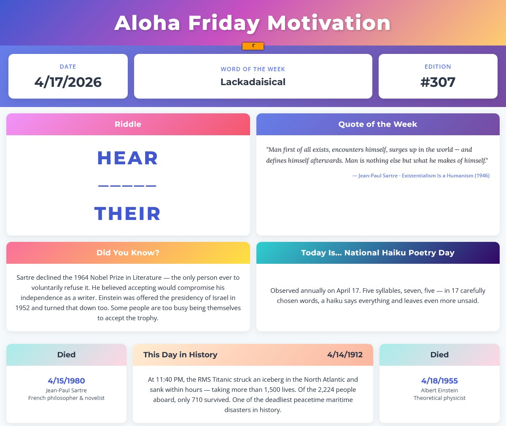

Happy Aloha Friday! 🌺 (technically Saturday)
This week April bids farewell to two giants — Jean-Paul Sartre on April 15, 1980, and Albert Einstein on April 18, 1955. One rewrote the laws of the universe. The other rewrote the laws of the self. What connects them is more interesting than the coincidence of the calendar: both spent their lives wrestling with the same defining tension — freedom versus determinism. Einstein's physics demolished the clockwork universe, revealing that uncertainty is woven into reality at its most fundamental level. Sartre picked up the torch philosophically: if nothing is predetermined, then you are condemned to be free. Two disciplines, one conclusion — you are responsible for what you make of yourself.
Sartre was the reason I chose philosophy at Hartwick College 25 years ago. In Arnold Hall, around a long wooden table in Professor Stanley Konecky's Philosophy in Literature course, a circle of students wrestled with Being and Nothingness — trying to make heads or tails of it. Then we read The Stranger and something cracked open. A need to write. To think critically. To THINK (maybe too much sometimes, my wife would say). That way of questioning shaped everything that came after.
My college roommate Jay was a science major. We came at the world from completely different angles — him through data and systems, me through language and meaning — but we kept circling the same territory: causality, consciousness, what it means to be here at all. The debates were different, but the questions were the same. And we always found our way back to the same place. Music. It was predominately The Grateful Dead and Phish, but really all of it — music as the universal language that collapsed the distance between a science major and a philosophy major the same way it collapses the distance between a physicist and an existentialist. Some things don't need a framework to work.
Spring arrives the same way. Color returning to what was grey, warmth finding its way back into what was cold. That shift has a sound to it, and some of those sounds come with a color attached. Many songs carry a color in their title, but three stop me every time: Joni Mitchell's Blue, Coldplay's Yellow, and 311's Amber. The ache of blue. The brightness of yellow. The warm glow of amber. Each one feels like a season born. Each one feels like memory.
Click through each one and let me know how they make you feel. And drop your favorite color song in the comments — I'd love to hear which ones stop you.
Now, go into this weekend with your eyes open and your assumptions loose. You are not predetermined. That's the whole point. 🌺
Until next week, Mahalo
— M
